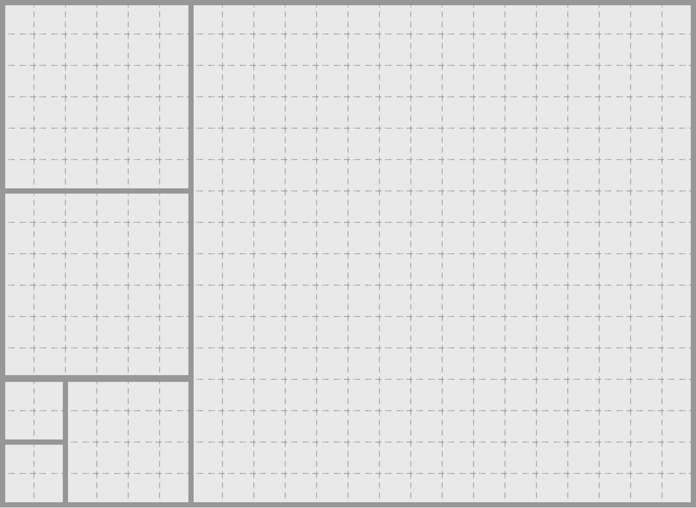

<div class="page-content single clearfix">
                <section class="box clearfix main-content">
                    
                    


<div class="problem-wrapper">

    <div class="problem-headline clearfix">
        <div class="headline-wrapper"><h1>Problem E<br>艾迪摺紙趣</h1></div>
    </div>

            
  <div class="problembody">
    <p>
    艾迪是天龍國小中一個冰雪聰明的孩子。今天學校美術課老師發給同學們一張長方形色紙，讓大家自由發揮創意。接過色紙後，艾迪感到無比興奮，因為這是他第一次看到長方形的色紙。於是他把色紙高高的舉在頭上，搖頭晃腦的細細端詳著它的色澤、形狀
    …… 。看著看著，好奇的艾迪越發覺得奇怪，臉上露出了十足困惑的神情。</p>

    <p>
    這時，坐在艾迪旁邊的你，看著艾迪詭異的舉動加上疑惑的表情，你決定要一探究竟，看看艾迪腦裡到底在想些什麼。一問之下才發現原來艾迪覺得他手裡的這張長方形色紙太不對稱了，不是他所喜歡的正方形，所以他決定要把這張長方形色紙撕成一些正方形的小色紙。</p>

    <p>
    但是艾迪手邊並沒有剪刀、美工刀之類的工具，他只能用以下的方式來切割色紙：先將手上的色紙沿著和其中一邊平行的方向在任意位置對折，接著沿著折線將整張色紙撕開、一分為二，然後再對這兩張色紙進行上述的操作，一直到剩下的色紙都是正方形的。但是艾迪不希望他的色紙變得太破碎，所以他希望你告訴他以這個方法切割，最少可以把原來的長方形切割成幾個正方形。（注意：艾迪原先拿到的長方形的邊長皆為整數，切出來的正方形邊長也必須為整數）</p>

    <p>舉例來說，如果艾迪拿到一張 <span class="tex2jax_process">$16 \times
    22$</span> 的長方形色紙，那一種可行的切割方法如下圖所示，最後會得到 <span class="tex2jax_process">$6$</span> 個正方形，而這個切割方式所切出的正方形數量也是最少的。</p>

    <div class="figure">
      <center>
        
      </center>
    </div>

    <h3>Input</h3>

    <p>測試資料只有一行，包含兩個正整數 <span class="tex2jax_process">$N,
    M$</span>，代表艾迪的色紙大小為 <span class="tex2jax_process">$N \times
    M$</span>。</p>

    <ul class="itemize">
      <li>
        <p><span class="tex2jax_process">$1 \leq N, M \leq
        100$</span></p>
      </li>

      <li>
        <p><span class="tex2jax_process">$N \neq M$</span></p>
      </li>
    </ul>

    <h3>Output</h3>

    <p>請輸出一行包含一個正整數表示這張色紙最少能切割成幾個正方形。</p>

    <table class="sample" summary="sample data">
      <tbody><tr>
        <th>Sample Input 1</th>

        <th>Sample Output 1</th>
      </tr>

      <tr>
        <td>
          <pre>22 16
</pre>
        </td>

        <td>
          <pre>6
</pre>
        </td>
      </tr>
    </tbody></table>

    <table class="sample" summary="sample data">
      <tbody><tr>
        <th>Sample Input 2</th>

        <th>Sample Output 2</th>
      </tr>

      <tr>
        <td>
          <pre>3 2
</pre>
        </td>

        <td>
          <pre>3
</pre>
        </td>
      </tr>
    </tbody></table>

    <table class="sample" summary="sample data">
      <tbody><tr>
        <th>Sample Input 3</th>

        <th>Sample Output 3</th>
      </tr>

      <tr>
        <td>
          <pre>5 35
</pre>
        </td>

        <td>
          <pre>7
</pre>
        </td>
      </tr>
    </tbody></table>
  </div>

    
</div>


                </section>
            </div>